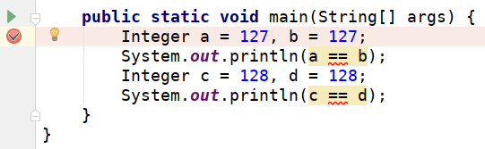
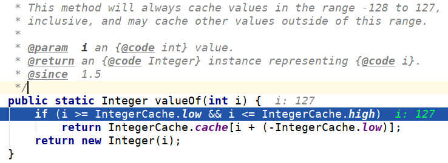
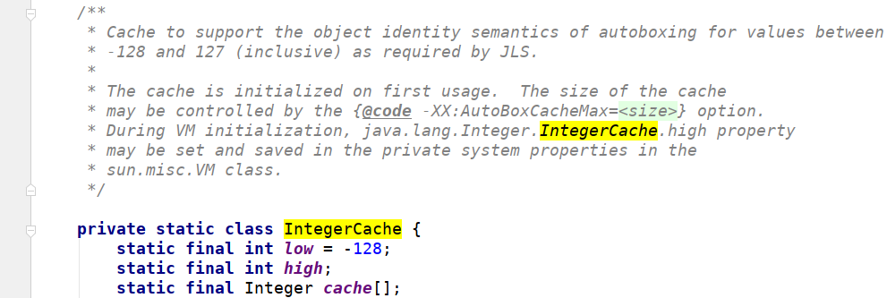

IntegerCache
为什么 127 == 127 会返回为 True，而 128 == 128 返回为 False？
代码如下：
1 | public class Main { |
结果：
1 | true |
两个引用如果指向的是同一个对象，那么 == 成立；
反之，如果指向的不是同一个对象，那么 == 不成立，即使引用的内容是一样的。
如果127都相等，为什么128不相等呢？
断点设置在初始化时：

debug
可以看到进入了 valueOf 方法：

debug1
同时可以看到有个 IntegerCache 类，从名字上可以判断是缓存整数类型的类（并且是私有静态类）。
可以看到上面的注释写着：This method will always cache values in the range -128 to 127.
也就是如果值是在 -128~127 范围内，那么第二次 valueOf 赋值时不再 new Integer(i)，而是直接使用缓存下来的对象。
所以 Integer a = 127, b = 127;，b 的值指向了和 a 一样的对象。
那么是否可以更改缓存的范围呢？

IntegerCache
注释上有一句：The size of the cache may be controlled by the {@code -XX:AutoBoxCacheMax=
也就是我们可以在启动时设置选项 -XX:AutoBoxCacheMax=<size> 来改变这个缓存范围。